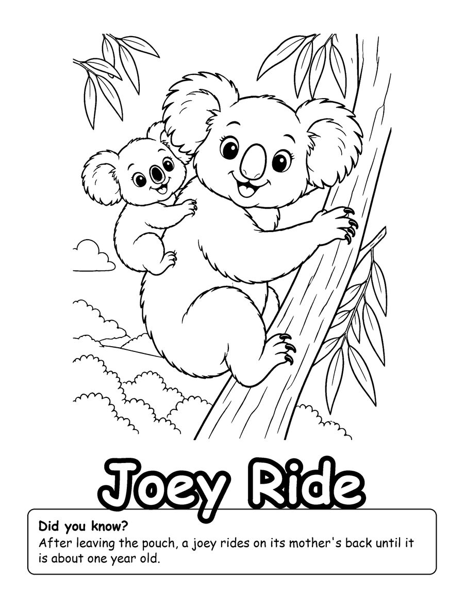
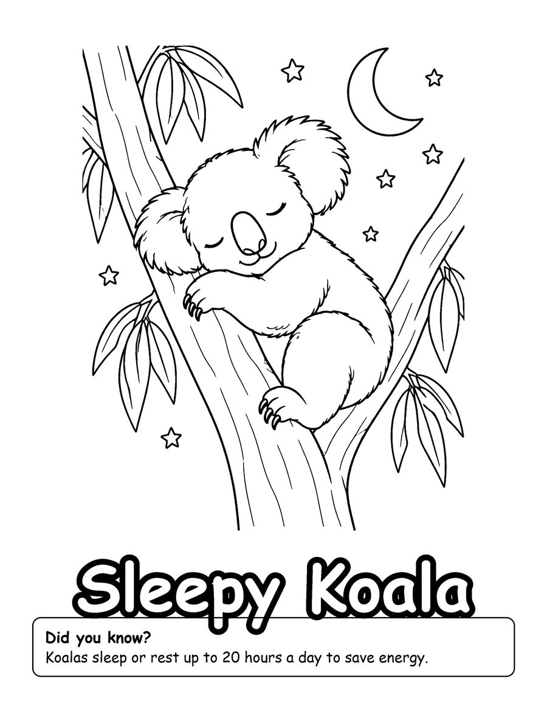
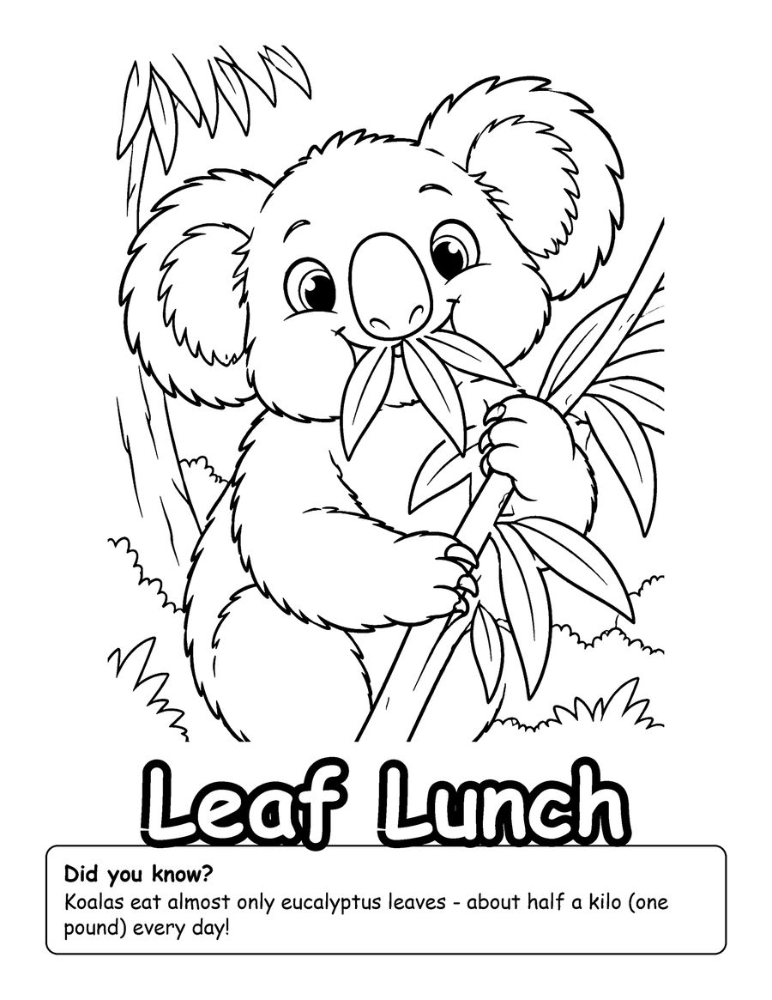

Free koala coloring pages for kids are easy to find, but these come with real koala facts. The three pages are from Koala Kingdom, a coloring book for ages 6 to 12 with 40 cute koalas. Your free set shows a joey riding on its mother's back, a sleepy koala and a koala having a leaf lunch.
Koalas are not bears. They are marsupials, which means a baby koala, called a joey, spends its first months in its mother's pouch before riding on her back. Koalas eat mostly eucalyptus leaves and sleep many hours a day to save energy. Ask your child what they notice in each drawing and compare it with those facts. The pages work well for Australia themes, animal units and quiet time at home. Print on US Letter paper at 100% scale and color with markers, crayons or colored pencils. The full book has 40 koala pages, from tree hugs and rainy days to a bush walk.
Your 3 free coloring pages

Sleepy Koala
Download free page (PDF)
Leaf Lunch
Download free page (PDF)Printing tips
- Print at 100% scale on US Letter (8.5 x 11 in) paper. For A4, choose “Fit to page”.
- Use heavier paper (65 lb / 120 gsm or more) if you color with markers, so ink does not bleed through.
- Download the PDF first, then print from your PDF viewer for the sharpest lines.
Get all 40 pages
These 3 pages are a taste of Koala Kingdom (Kids 6-12). The full coloring book has 40 pages, ready to print or color in a book.
More free coloring pages

Free Animal Coloring Pages for Preschoolers
Kids 3-6

Free Unicorn Coloring Pages for Kids
Kids 6-12

Free Cat Coloring Pages for Kids
Kids 6-12

Free Honey Badger Coloring Pages for Kids
Kids 6-12